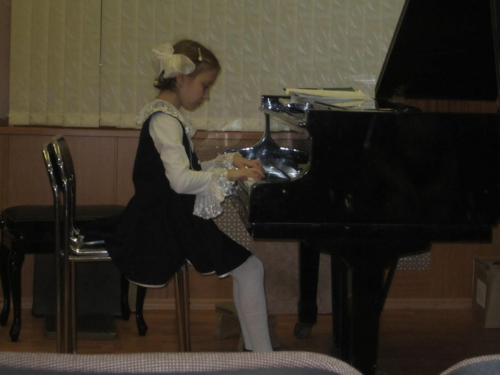
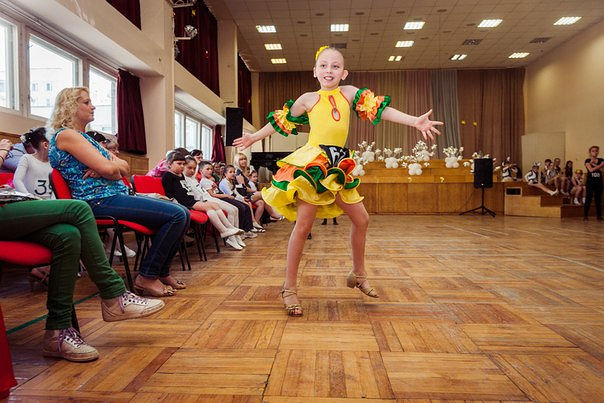
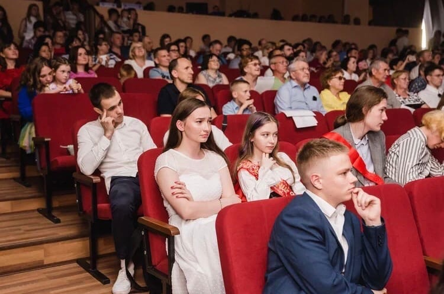
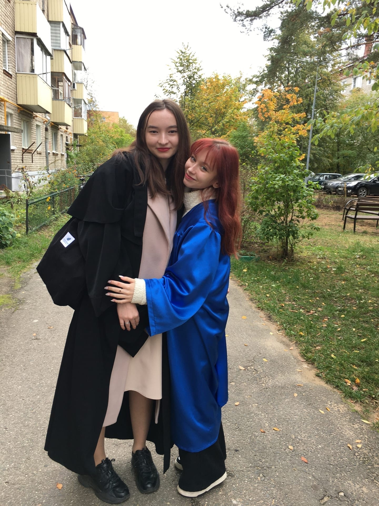

 Первый раз в музыкальную школу я пошла в 5 лет. Я этого совсем не помню, но по рассказам моей семьи-мне очень нравилось. Но вскоре мне пришлось бросить моё хобби из-за переезда в другой город. Через пару лет я и моя семья всё-таки вернулись обратно и поэтому я снова начала ходить в музыкальную школу. Я училась играть на фортепиано, посещала уроки сольфеджиио и музыкальной литературы, училась правильно петь. Все 7 лет, что я там училась, я ездила на конкурсы по игре на фортепиано, и не раз занимала призовые места. Благодаря моему упорству я и закончила музыкальную школу на "отлично", хотя желание бросить её посещало меня безумно часто.
 С танцами у меня совершенно другая история. Мои двоюродные брат с сестрой ходили на танцы с самого их детства, я приходила на их показательные воступлению, но мне совершенно не нравилось. Потом что-то во мне щелкнуло и я попросила записать мня на танцы. Мне понравилось. Я занималась танцами около 5 лет. Это были разные стили танцев: хип-хоп, бально-спортивные, коллективные. Но какой-бы это ви ни был, я всё так же ездила в другие города на соревнования и опять же занимала первые, вторые, третьи, а то и никакие места:)
 В школе я всегда училась хорошо. Получить оценку "3", а тем более "2" для меня всегда было катастрофой. Я очень строго относилась к своей учёбе, правда к ЕГЭ я готовилась всего лишь год, но это лишь потому что я не могла определться с моей будующей профессией. Но в итоге Егэ я сдала хорошо и поэтому поступила в университет "Дубна".
 Когда я узнала, что в университете есть такая роль как "староста группы", мне сразу показалось это очень инетерсным. ведь это как вождь племени, это прямо говоря лидер и предводитель. Да, возможно кому-то это покажется скучным делом, а то и лишней тратой времени, но за почти полтора года я ещё ни разу не пожалела о своём решении стать старостой.